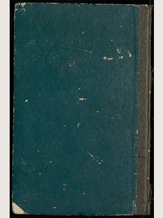

كتاب ديوان الامام العارف باللّه الشيخ حفص شرف الدين عمر بن الفارض قدس الله سره

قراءة محددة النطاق لصفحة واحدة من النسخة الممسوحة، وليست تلخيصا كاملا للكتاب. نصف ما ظهر لنا في هذه الصفحة فقط، ولا ننقل نصها.
قصيدة شوق من ديوان ابن الفارض
الصفحة قصيدة مشكولة تفتتح بعبارة «هكذا العشق رضيناه»، وفيها شوق إلى زيارة المحبوب، وشكوى من البعد والفراق. نصف هنا الصفحة بوصف أدبي، ولا نفسر الرموز الصوفية التي تنسب إلى الشاعر لأننا لم نقرأ ما يبينها في الصفحة، فنترك التفسير لمن يطالع الديوان كاملًا. والنسخة مضبوطة بالشكل، فيسهل على القارئ أن يتابع الإيقاع بصوت مسموع، وفي الصفحة أبيات متتابعة على قافية واحدة.
زاوية وحدود القراءة
قراءة صفحة شعر واحدة من الطبعة الممسوحة، لا الديوان كاملًا.
الطبعة والحقوق
تصنف جامعة نيويورك مجموعتها الرقمية للكتب العربية بأنها محتوى عربي في الملك العام، ولا يذكر سجل هذا الكتاب بيان حقوق خاصا به. سنة الطبعة بحسب السجل: ١٨٧٩م. مصدر النسخة الممسوحة: مكتبات جامعة كورنيل. حياة المؤلف بحسب السجل: ١١٨١ أو ١١٨٢-١٢٣٥م. هذا كل ما نستند إليه في الحقوق، ولا ندعي أكثر منه.
تنزيل PDF المجاني ↓ صفحة الكتاب في المجموعة ↗